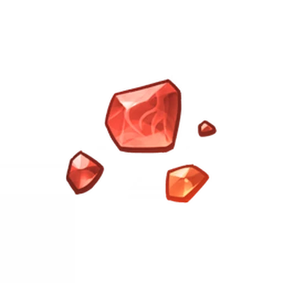
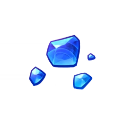
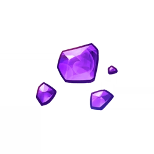

Agnidus Agate
- Agnidus Agate
- Different types: Agnidus Agate Sliver, Agnidus Agate Fragment, Agnidus Agate Chunk, Agnidus Agate Gemstone
- Elemental: Pyro
- Located: Sliver is dropped by Pyro Hypostatis which is located in Inzauma, Pyro Regisvines which is located in Liyue, and can be a reward for completing the Wolf of the North Challenge. Fragment is dropped by level 40+ Pyro Hypostatis, level 40+ Pyro Regisvines which are located in Liyue,can be a reward for completing the 40+ Wolf of the North Challenge and can be crafted. Chunk is dropped by level 60+ Pyro Hypostatis, level 60+ Pyro Regisvines which are located in Liyue,can be a reward for completing the 60+ Wolf of the North Challenge and can be crafted. Gemstone is dropped by level 75+ Pyro Hypostatis, level 75+ Pyro Regisvines which are located in Liyue,can be a reward for completing the 75+ Wolf of the North Challenge and can be crafted.

Varunada Lazurite
- Varunada Lazurite
- Different types: Varunada Lazurite Sliver, Varunada Lazurite Fragment, Varunada Lazurite Chunk, Varunada Lazurite Gemstone
- Elemental: Hydro
- Located: Sliver is dropped by Oceanids which is located in Liyue, Hydro Hypostasis which is located in Inazuma and can be purchased from the Souvenir Shop. Fragments are dropped by level 40+ Oceanids which are located in Liyue, level 40+ Hydro Hypostasis which is located in Inazuma and can be crafted. Chunks are dropped by level 60+ Oceanids which are located in Liyue, level 60+ Hydro Hypostasis which is located in Inazuma and can be crafted. Gemstones are dropped by level 75+ Oceanids which are located in Liyue, level 75+ Hydro Hypostasis which is located in Inazuma and can be crafted.

Vajrade Amethyst
- Vajrada Amethyst
- Different types: Vajrada Amethyst Sliver, Vajrada Amethyst Fragment, Vajrada Amethyst Chunk, Vajrada Amethyst Gemstone
- Elemental: Electro
- Located: Sliver is dropped by Electro Hypostasis which is located in Mondstadt, Electro Regisvine which is located in Sumeru, Thunder Manifestation which is located in Inazuma, and can be purchased from the Souvenir Shop. Fragments are dropped by level 40+ Electro Hypostasis which is located in Mondstadt, level 40+ Electro Regisvine which is located in Sumeru, level 40+ Thunder Manifestation which is located in Inazuma, and can be crafted. Chunks are dropped by level 60+ Electro Hypostasis which is located in Mondstadt, level 60+ Electro Regisvine which is located in Sumeru, level 60+ Thunder Manifestation which is located in Inazuma, and can be crafted. Gemstones are dropped by level 75+ Electro Hypostasis which is located in Mondstadt, level 75+ Electro Regisvine which is located in Sumeru, level 75+ Thunder Manifestation which is located in Inazuma, and can be crafted.
